The brief asks for one agent. The role is owning the platform that many agents plug into. So I built the platform, and made the renewal agent its first tenant.
Nothing is deployed, per the brief. The dashboard is a read-only snapshot of a real local run, so you can see it without cloning anything.
Their health score drops while the renewal approaches. The platform gathers that account's facts from Salesforce, Gainsight, HubSpot and Zendesk, uses an LLM to work out the likely reason they might leave, writes the finding back to the CRM, and alerts the account owner in Slack with the specific numbers behind it.
Every step is recorded, so anyone can ask "why did this agent do that?" and get this, with no code and no log files. Real output, from the sample payload Supermetrics supplied:
The same run is also available as rules, values and timings for whoever is debugging it. Both are rendered from one trace, so they cannot disagree.
Supermetrics supplied three accounts whose warning signs look almost the same. All three are losing health at a similar rate, all three renew soon. A system that just repeats the warning back at you says the same unhelpful thing about all three. The useful answer is what is actually going wrong at each one, and they are three completely different problems needing three completely different responses:
| Customer | What the platform worked out | What that means for the person who owns the account |
|---|---|---|
| Northwind Retail $84k |
People have largely stopped using what they are paying for | Their team shrank and usage collapsed. Re-engage, or expect them to leave. |
| Bluefin Analytics $31k |
The data connections they depend on have stopped working reliably | They still use it daily, but they no longer trust the numbers. This is ours to fix. |
| Verdant Foods $67k |
The person who championed us internally has moved on | Nothing is broken and usage is fine, but nobody is left who knows how it works. |
Same trigger shape, same falling health score, three different answers, each with the specific evidence behind it. That is the difference between an alert and something worth acting on.
| Requirement | Where | The part that matters |
|---|---|---|
| 1 · Ingest a webhook trigger | app.py, events.py |
Runs your supplied payload as given. One path for every vendor; each gets a normaliser, so a payload change touches one function and no agent. |
| 2 · LLM finds the churn driver and drafts an alert citing evidence | renewal_risk/analysis.py |
Evidence is structured metric/value pairs, not prose. Every citation is checked against the real data in code; invented numbers get the answer discarded. |
| 3 · Write to Salesforce + Gainsight | renewal_risk/agent.py, clients/ |
Uses the objects and fields from your mock_crm_write_examples: Opportunity with Renewal_Risk_Level__c and Risk_Driver__c, Gainsight CSTA with risk_flag and risk_summary. Idempotent, keyed off the event id. |
| 4 · Route to the account owner in Slack | renewal_risk/routing.py |
Rules live in YAML. The rule that fired is written to the trace, so "why this channel" is answerable without reading code. |
| 5 · Log every step, answer "why did this agent do that?" in minutes | observability.py + dashboard |
The panel in section 01, plus GET /traces/{id}/why and python cli.py why <id>. |
.venv/bin/python runner.py| Scenario | What it proves |
|---|---|
| Your sample payload, as given | Three near-identical triggers resolve to three distinct correct drivers, with the evidence for each. The redelivered evt_1001 is deduped: no second CRM write, no second alert. |
| Our own webhook shape | A different payload shape for the same business fact. One normaliser, no agent change. |
| Salesforce renewal trigger | A third shape again. Vendor payload changes stay contained. |
| Support ticket spike | A second agent, on the same bus, added without touching the first one. |
| Malformed payload | Rejected at the boundary with a reason, dead-lettered. Not lost, not half-written. |
| Unknown source | Refused before it can reach an agent. |

The three supplied accounts have near-identical triggers and near-identical health
drops, deliberately, to expose an analysis step that just reformats the trigger. It
exposed one in mine. My prompt returned champion_loss for both Verdant
Foods and Northwind Retail, because Northwind's CS notes also mention a contact changing
role. Two different accounts, the same answer: exactly the failure the file is built to
surface.
The discriminator was in the data, not in the model. Northwind's automation stopped too - transfers paused, 18 of 22 seats inactive. One person changing role does not explain that; team-wide withdrawal does. Verdant's automation is healthy - scheduled refreshes running normally - and only person-shaped work stopped, with a named departure holding the sole admin seat. So: when the machinery is fine and only the human work stopped, that is a lost champion. When the machinery stopped too, it is broad disengagement, whoever left.
| Account | Before | After | Now |
|---|---|---|---|
| Northwind Retail | champion_loss | adoption_decline | correct |
| Bluefin Analytics | data_integration_regression | data_integration_regression | correct |
| Verdant Foods | champion_loss | champion_loss | correct |
Also caught: the eval scored grounding with its own string comparison instead of the production verifier, and reported 62% on output production had already accepted. Two definitions of "grounded" that disagreed. There is now one.
The LLM must cite evidence as metric/value pairs. That makes every claim verifiable against the data actually fetched, deterministically, with no second model grading the first. If it invents a number the analysis is discarded and a rules-based answer used instead. The grounding rate is 100% because ungrounded output never survives.
The golden eval set includes a deliberately ambiguous account where the correct answer is "I don't know". Prompt v2 confidently claimed adoption decline. I wrote v3 with an explicit materiality test and it passed — then I ran it again and got a different answer at 0.8 confidence from identical input. The model is non-deterministic on ambiguous cases, and my eval had been measuring luck. It now samples each case multiple times and gates on a consistency metric, because a model that answers differently each time is not usable for automated action however good its average looks.
It checks that every agent has an owner, that reviews are not overdue, that the dead-letter queue is clean, that the eval gate is green. Every one of those has a correct answer, so a model in the safety path would turn a deterministic result probabilistic and charge for the privilege. Knowing where not to use a model is most of this job.
| Failure | What happens |
|---|---|
| Model invents evidence | Analysis discarded, deterministic answer used, run flagged. |
| Model or vendor is down | Fallback chain, then rules-based analysis. Run marked degraded. The human is still alerted. |
| We don't trust the prediction | CRM writes are held and a person is asked in Slack. The Golden Record marks it awaiting_approval. |
| A flapping trigger loops on one account | Per-account hourly cap on model calls; run continues deterministically and escalates. |
| Daily budget runs out | Spending stops at 90% so runs degrade predictably, not mid-analysis. Alerts are never dropped to save money. |
| Two agents write one account at once | Optimistic concurrency on the Golden Record. The stale write is rejected and retried, not lost. |
| Model is confidently wrong over time | Human verdicts feed a calibration table; low-precision drivers are auto-flagged for review. |
python -m venv .venv && .venv/bin/pip install -r requirements.txt
cp .env.example .env # optional: add OPENROUTER_API_KEY
.venv/bin/python runner.py # 6 scenarios, including the failure paths
.venv/bin/uvicorn app:app # dashboard on http://127.0.0.1:8000It runs with no API key at all, in offline mode, on a deterministic analyser. That is not a demo convenience: it is the same fallback that keeps alerts flowing when the model is down.
| Judging the submission | README · failure modes, config vs hardcoded, debugging live, 10x scale |
| The cloud proposal | ARCHITECTURE.md · services and why, BigQuery layout, SLOs, data protection |
| Does it meet the role | JD_COVERAGE.md · every responsibility mapped to where it lives |
| Operating it | RUNBOOK.md · prompt rollback, on-call procedures |
The job description lists what this person owns day to day. Each line below is a real thing you can run against this repo, not a claim.
| Responsibility | How it works here | Run it |
|---|---|---|
| Own the Agent Registry what each agent does, who owns it, when it was last reviewed |
One YAML file is the source of truth. Nothing reaches the bus without an entry, an owner and a review date. Overdue reviews are surfaced, not buried. | python cli.py registry→ 3 agents · 3 enabled · 1 overdue review |
| Onboard new agents correctly with the GTM and CS AI Leads |
Onboarding is a command, not a checklist, because checklists get skipped under pressure. It refuses a missing owner, an unknown tool, a bad event name or a duplicate agent. | python cli.py new-agent …generates the module + registry entry; see below |
| Event routing without hardwiring health drops, renewals, stage changes |
Publishers never learn who subscribes. Agents declare the events they want in the registry; the bus fans out. Adding a subscriber changes no existing agent. | python runner.pyone event, multiple agents, independent traces |
| Consistent, reliable vendor connections Salesforce, Gainsight, HubSpot, Zendesk |
All five go through one client layer. Retry, idempotency, circuit breaking and rate limiting are composable policies configured per vendor, not copied per agent. | curl localhost:8000/toolslive policy chain + circuit state |
| Managing vendor API changes | A payload change is one normaliser. An endpoint change is one _execute. Every agent inherits the fix; none of them are touched. |
worked example in LIVE_MODIFICATION.md |
| Shared functions, fixed once | No agent implements retry, cost accounting, schema validation or grounding itself. When two definitions of "grounded" drifted apart, that was a bug, and it was fixed by deleting one. | python -m pytest -q81 tests, weighted to failure paths |
| Observability: every run logged and queryable | One trace per run, one row per step, rendered for two readers: plain English for whoever is asking, rules and values for whoever is fixing. Same trace, so they cannot disagree. | python cli.py why <trace_id>curl localhost:8000/traces |
| Monitor the agents catch issues fast |
A QA agent audits the platform itself: unowned agents, overdue reviews, dead letters, a failing eval gate, open circuits. It has no LLM, deliberately, because every check has a correct answer. Non-zero exit, so it doubles as a CI gate. | python cli.py auditexit 0 = no criticals |
| Data quality and write authority on the Golden Record | Every write carries updated_by and trace_id, so any value traces back to the run that produced it. Optimistic concurrency means a competing writer is rejected and retried, never silently lost. |
curl localhost:8000/accounts/{id}/golden |
| Translate stakeholder needs into infrastructure | Thresholds, severity bands, routing rules and channels live in YAML. A CS lead can change who gets paged without an engineer, and the rule that fired is written to the trace. | edit config/platform.yaml→ re-run, see the new rule id in the trace |
This is the part a GTM or CS Lead actually touches, so it is one command and the platform enforces the rules rather than trusting anyone to remember them.
python cli.py new-agent qbr_nudge \
--owner denis.miano \
--description "Nudges CS when an enterprise account has no QBR before renewal." \
--subscribes-to renewal.risk_signal \
--tools salesforce gainsightThat writes agents/qbr_nudge/agent.py and one registry entry. Nothing else
changes. The new agent immediately has, without a line of it being written:
And it refuses to onboard anything that would become someone else's problem later:
| Attempt | Refused because |
|---|---|
--owner "" | an agent nobody owns is an outage waiting |
--tools netsuite | a tool must exist before an agent can be granted it |
--subscribes-to healthscore | event types must be dotted, so routing stays predictable |
new-agent renewal_risk | that agent already exists |
new-agent "Bad Name" | names must be importable module names |
"Monitor the agents" is in the job description, so monitoring is an agent too - one that checks the platform rather than a customer. It runs on the same bus, is traced like any other run, and has no LLM: every check it performs has a correct answer, so a model there would make a reliable result probabilistic and bill for it.
$ python cli.py audit
Platform audit: WARN (0 critical, 2 warnings)
[WARNING ] review_cadence
Agent 'support_escalation' last reviewed 193 days ago (interval 90)
fix: Review with jordon.lacken, then update last_reviewed in the registry
[INFO ] guarded_rejections
2 payloads correctly refused at the boundary
fix: No action needed. Investigate only if the volume is unexpected, which
would suggest a vendor changed a payload shape.
[WARNING ] fallback_rate
100% of analyses fell back to deterministic logic (5/5).
Reasons: ['llm_offline_mode']
fix: Check OPENROUTER_API_KEY and the model chain in config/platform.yaml
trace: tr_d5ada3ea4b2e45a6Three things worth noticing. Every finding carries the fix and who to talk to, because a warning nobody knows how to action is noise. The audit itself has a trace id, so an audit is as auditable as anything else it inspects. And it exits non-zero on a critical, which makes it a CI gate as well as a report: the platform can fail its own build.
It catches unowned agents, overdue reviews, dead letters piling up, a failing eval gate, open circuit breakers, and a fallback rate that means the model or a vendor is quietly degraded.
Built with Claude Code, as the brief requires. The parts worth knowing are where it needed supervision: it produced tests that asserted whatever the code already did rather than what it should do, and its first OpenTelemetry integration opened a root span per step so a tracing backend would have shown unrelated single-span traces instead of one run per agent. Both are written up in AI_BUILD_LOG.md. An agent that writes code you do not review produces exactly the failure class this platform exists to prevent.
The OpenRouter grant is tracked as a budget, not an allowance. Spend per run, per agent and against the $50 is on the dashboard's cost panel, because knowing what an agent costs and what remains is part of operating one. A full analysis is roughly a cent; a live golden-eval sweep across all cases is about twelve. The platform stops paying for the model at 90% of the daily budget and routes runs to a human rather than either overspending or silently dropping alerts.
Everything else here executes: 89 tests, the golden eval gate, and the platform's own self-audit, all green in CI on three Python versions.
{kind=link}